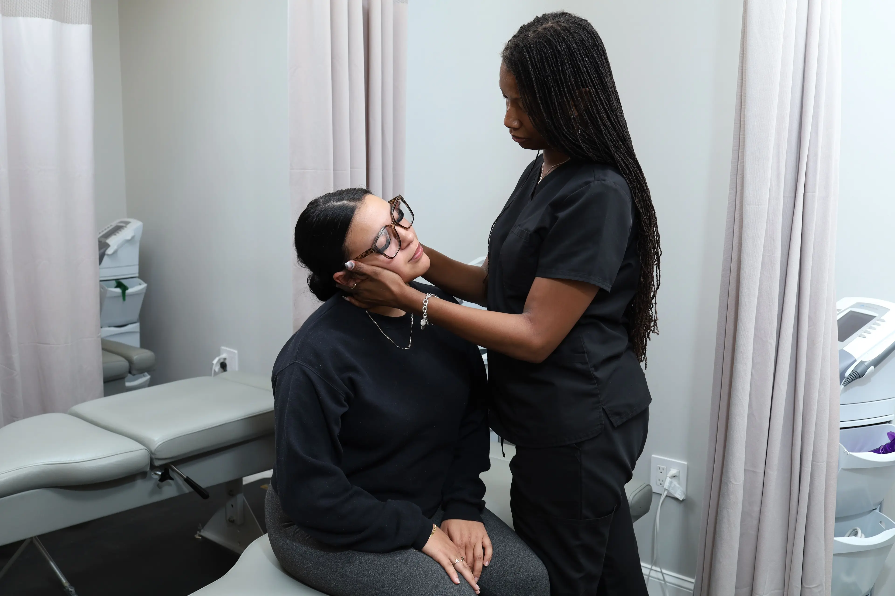

Restore movement, build strength, and reduce pain with rehabilitation that’s tailored to you. Our physical therapists work alongside our pain and spine specialists so your recovery plan is clear, coordinated, and focused on long-term function.
Our physical therapists design programs to improve mobility, strength, and function after injury, surgery, or chronic pain. Care is coordinated with our pain and spine teams so your PT plan supports your overall treatment.
Targeted exercises to restore range of motion, build strength, and improve posture and movement patterns. Programs are progressed as you improve.
Hands-on techniques to reduce stiffness and pain and support tissue healing. Used together with exercise for lasting results.
Your therapist communicates with our pain and spine specialists so your rehab aligns with injections, surgery, or other treatments.
Your first visit includes an evaluation: we discuss your history, goals, and limitations and assess your movement and strength. From there we create a plan and start treatment. Follow-up sessions focus on exercises and hands-on care. We also give you a home program so you can keep progressing between visits. When you’re also seeing our pain or spine team, we coordinate so your PT supports your overall plan.

Personalized rehabilitation to restore movement and strength.
Physical therapy (PT) uses exercise, manual therapy, and education to restore function and reduce pain. Therapists evaluate how you move, identify weaknesses or imbalances, and design a program to address them. PT is often recommended after surgery, for back or neck pain, joint problems, or injury. At PPSI, PT is part of the same team as pain management and spine surgery, so your rehab is aligned with your full care plan.
We treat back and neck pain, sciatica, post-surgical rehabilitation, joint pain (shoulder, knee, hip), sports and overuse injuries, and balance or mobility issues. We also work with patients who have had pain management procedures or spine surgery and need structured rehab to get the most from their treatment.
We focus on clear goals and measurable progress. Your program is tailored to your condition, job, and activities. We use evidence-based techniques and emphasize what you can do at home so you stay on track. When you’re seeing other PPSI specialists, we share your progress and adjust your plan so care is consistent.
PT is often recommended when pain or stiffness limits your daily activities, after an injury or surgery, or when your doctor wants to try conservative care before considering injections or surgery. Starting early can speed recovery and reduce the risk of chronic pain. We’ll work with your referring doctor and our in-house team to coordinate timing and goals.
It depends on your condition and goals. Some people need a few weeks; others benefit from a longer program. We re-evaluate regularly and adjust your plan. Our aim is to get you back to function and give you the tools to maintain it, so you’re not dependent on therapy indefinitely.
The same team as your pain and spine care—so your rehab is coordinated, your goals are clear, and your recovery is on one path.
Your PT works with our pain and spine physicians so your plan is consistent and progress is tracked together.
We use proven exercise and manual therapy techniques tailored to your diagnosis and goals.
PT is available at multiple PPSI locations across New Jersey with flexible scheduling.
We accept most major insurance plans and help with referrals and authorizations when needed.
Schedule an evaluation with our PT team. We’ll assess your condition, set goals, and design a program tailored to you. Most major insurance accepted; same-week appointments available across New Jersey.